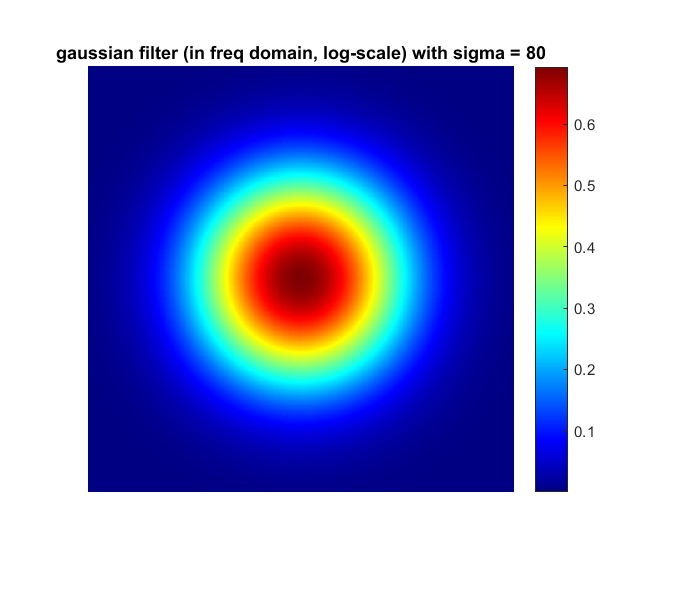
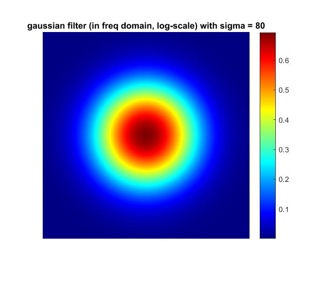

Contents
MyMainScript
tic;
Q4
For both ideal low-pass filter and gaussian low-pass filter we observe that increasing the parameter value (D for ideal and \sigma for gaussian) increases the sharpness or the fine details in the image. This is as expected because details like edges and fine textures constitute of high frequency components which are inhibited if D is kept low or highly subdued (to the point of inhibition) if \sigma is kept low. Also, in general, gaussian filtering gives smoother images as using an ideal filter presents results in substantial degree of ringing artifact in the filtered images.
barbara256 = imread('../data/barbara256.png'); [r, c] = size(barbara256); barbara_freq = fftshift(fft2(barbara256,2*r,2*c)); filters = {'ideal','gaussian'}; param_names = {'D','sigma'}; imshow(barbara256,[]); title('Original barbara'); for param = [40,80] for f = [1,2]; filter = filters{f}; param_name = param_names{f}; filter_matrix = zeros([2*r,2*c]); for i = 1:2*r for j = 1:2*c if strcmp(filter,'ideal'); filter_matrix(i,j) = ((i-r)^2 + (j-c)^2 <= param^2); else filter_matrix(i,j) = exp(-((i-r)^2 + (j-c)^2)/(2*param^2)); end end end figure; imshow(filter_matrix,[]); title(sprintf('%s filter (in freq domain) with %s = %d',filter,param_name,param)); figure; imshow(log(1+abs(filter_matrix)),[]); title(sprintf('%s filter (in freq domain, log-scale) with %s = %d',filter,param_name,param)); filtered_barbara_freq = barbara_freq.*filter_matrix; figure; imshow(log(1+abs(filtered_barbara_freq)),[]); title(sprintf('%s filtered barbara (in freq domain) with %s = %d',filter,param_name,param)); filtered_barbara_spatial = ifft2(ifftshift(filtered_barbara_freq)); filtered_barbara_spatial = filtered_barbara_spatial(1:r,1:c); figure; imshow(filtered_barbara_spatial,[]); title(sprintf('%s filtered barbara with %s = %d',filter,param_name,param)); end end toc;
Elapsed time is 5.255934 seconds.


 
